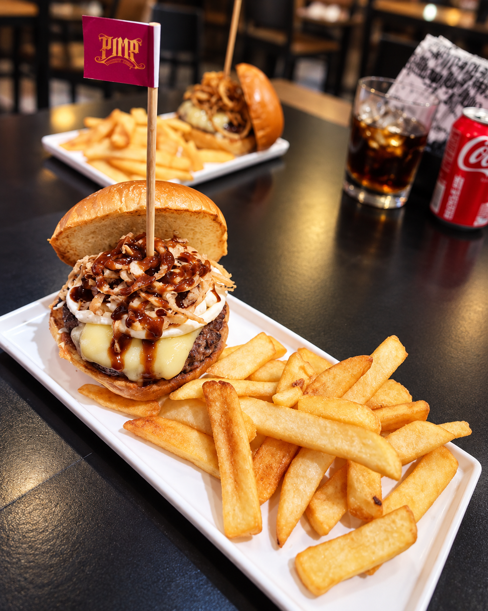
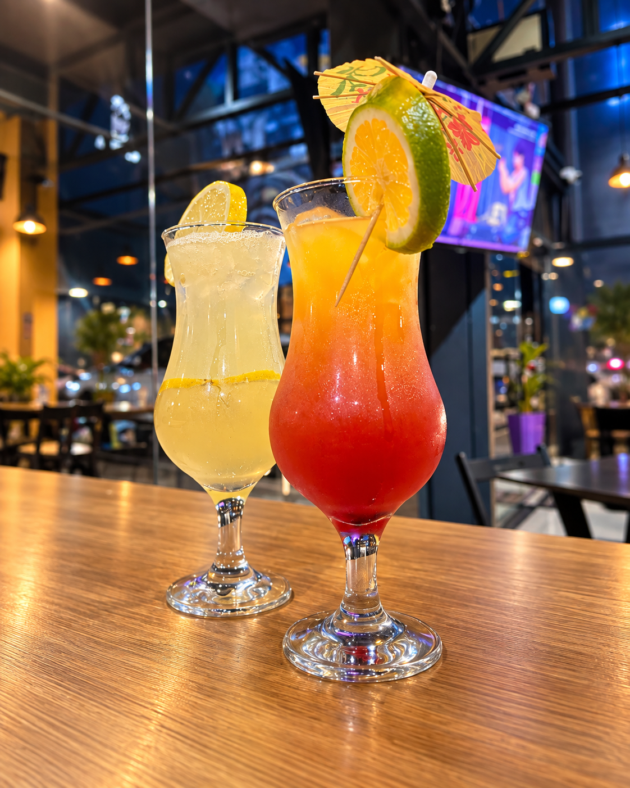
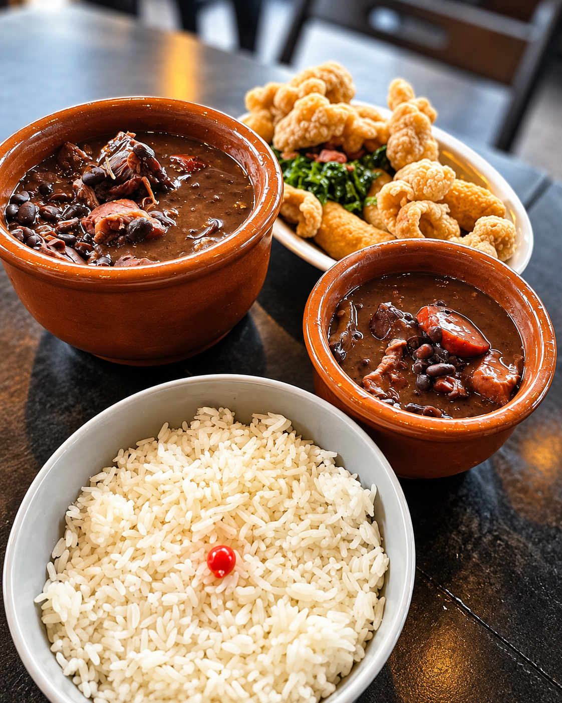

ÁGUA VERDE · CURITIBA
Da nossa
casa pra
sua mesa.
Comida que chega quente, conversa que fica e um bar para chamar de seu.

A CASA
DONA MOACIR · BAR & COZINHAAqui a mesa
é o ponto de encontro.
Um bar de bairro com apetite de cidade. Entre o fogo da grelha, o balcão cheio de gelo e aquela vontade de pedir mais uma porção, a Dona Moacir é feita para chegar sem pressa.
Conheça a casa ↗ 01 / 04
01 / 04DO SEU JEITO
Monte
seu burger.
Comece pela base e deixe a fome escolher o resto.
02BRIOCHE fofinho & amanteigado
QUEIJO MUSSARELA
CARNE ALTA
MAIONESE DA CASA
SEG · TER · QUA · QUI · SEX
Cada dia
tem um motivo.
Happy hour para esticar a conversa e pedir mais uma rodada.
Ver happy hour ↗
Happy a noite todaselecione um dia

SÁBADO · A PARTIR DAS 11HSÁBADO É DIA DE
Feijoada
sem pressa.
Feijão, paleta suína, bacon, calabresa, paio, linguiça colonial, costelinha e lombo defumado. Reposição livre da feijoada e guarnições.
Reservar para sábado ↗VENHA DE PERTO
A gente
te espera.
Av. dos Estados, 1066 — Loja 5
Água Verde · Curitiba — PR
✦DONA
MOACIR
MOACIR
ÁGUA VERDE
CURITIBA · PR
CURITIBA · PR